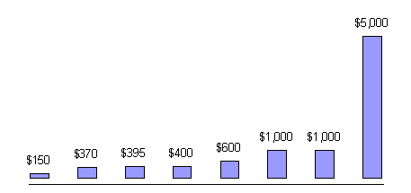

| dallaway.com - Writing - Outsourced component development |
Late in 1999 I was asked to develop a small Java applet for a colleague who was working on a bigger project for a client. This wasn't something I was really interested in and nor was it my speciality, but I thought it would be a good opportunity to commission the work via an internet auction. I'd spec and submit a proposal, developers would bid for the work, the work would get done by the best person for the job....everyone would be happy. This was supposed to be the model for future development (circa 1999), so I thought I may as well get my feet wet.
It sort of worked. I made some mistakes in my role as the customer, and in the end the development wasn't deployed. These are my notes on the experience.
Contents
Original: November 2001. This version: $Revision: 1.2 $ $Date: 2003/08/04 08:13:09 $
I decided to use the Components By Design service on Flashline.com. This service doesn't appear to exist anymore, and Flashline have moved on to other things. From memory, the process worked as follows:
As this was my first time using the Flashline service, they waived the US$100 fee I'd normally be expected to pay.
My proposal was:
Vertical Textbox Applet
An entertainment web site wishes to have a type-in text search box running vertically up the screen (i.e., a regular textbox with submit button, but rotated 90 degrees anticolockwise -- see additional GIF image showing an example).
A user will be able to type text into the text box, and when the user clicks the button or hits RETURN, the text will be submitted to a CGI for processing. The applet itself would not have to perform any searching or maintain text indices. The user should be able to delete text in the text box, but the following are NOT core requirements: cut and paste, scrolling beyond the end/top of the text area. An insertion point (cursor) is desirable, but not essential.
The applet should be configurable in terms of length, width, colours via the usual <PARAM> settings. A sample configuration is supplied together with a diagram showing the interpretation of the settings.
We would like to be able to change the face and size of the font. Ideally, this should be a font of our choosing (we can supply AFM files). If this is not possible, the standard Java fonts will be fine.
The applet should run on the widest possible selection of browsers and operating systems, including Netscape 3, IE 3 and up and MacOS, Windows 9x, Windows NT. This means it will be a JDK 1 application, with no use of JDK 1.2 features.
Yes, it was an insane feature to put on a site. The web site in question has since been closed.
The question and answers review period ran until end of October 1999. Bidding was to be completed by 5 November 1999, and the scheduled delivery date was for the end of November 1999. So start to end was planned to be around six weeks.
At the end of the bidding process I had received eight bids. These bids were from independents and small organizations in the USA, Canada, India and Russia, with an average of 2.5 years of Java experience and up to 10 years of C experience. The bids themselves ranged from US$150 to US$5000.
By way of an example of the kinds of information presented to me, here are the details of the developer who submitted the winning bid (I've removed some identifying details):
| Location | UNITED STATES |
| Technical Expertise | JDK 1.0.2 TO JDK1.2 (Smalltalk Background) Bean Development, Micro Code components, AWT Expertise, Author of patented World's smallest HTML Renderer |
| Spoken Languages | English |
| Experience | |
| C++ | Experience: 3 years
Target Platform: Win 3.11 wfw, Ultrix Class Libraries: Number of Developers: 1 |
| Java | Experience: 3 years Target Platform: Win 9x/NT, Linux Number of Developers: 3 |
| Smalltalk | Experience: 2years Target Platform: Win9x/NT Number of Developers: 4 |
| Databases | Experience: 3 years Databases: DB/2, SQLServer Number of Developers: 4 |
I was also given a means to contact the developer via an anonymous email system.
When developers sent in bids, they could also add comments. The winning bid was:
Why did I select that bid? All the CVs looked reasonable, but I had no way to verify the contents of the CVs. The US$150 bid was suspiciously low, and the US$5000 bid was suspiciously high, but the others were all reasonable. The thing that clinched it was that two of the developers contacted me via the anonymous mail system to point me at URLs where I could see a working demo version of what I'd asked for. I selected the one that looked most complete, because it gave me the confidence that the developer could complete the work.
This seems like a pretty amazing situation to be in: 8 developers bidding for work, two of which actually started the work to prove they can do the job.
I pressed the "accept bid" button on the Flashline site, and that was that. In email conversations with the developer we agreed a schedule for delivery. I failed to agree an acceptance criteria (big mistake) or the starting date of the promised tech support and bug fixing days.
Code was delivered. There was a small back-and-forth with the developer on making sure some of the features worked, but this was fairly painless. I passed the code on to my colleague who passed it on to the client.
Time passed.
The colleague who had commissioned the work with me had extracted himself from the project and shortly after went out of business. Rather than just duck out at this point, I thought the right thing to do was to see this part of the project through, so I established contact with the client to see how they were getting on with the applet. Of course, they hadn't even looked at it.
More time passed. The developer was starting to make noises about being paid -- quite reasonably. To reduce currency charges I decided I would pay the whole amount on acceptance from the client. The client acceptance wasn't coming through. I decided to take the risk and pay the developer.
About a week after paying the developer, the client calls me to talk about problems with the applet. I passed the questions on to the developer and heard nothing back. Absolute silence. This is you're basic outsourcing nightmare. It's not clear exactly what I could do in that situation (other than not get into the situation in the first place).
To cut a long story short, I was able to decompile the applet, fix the bugs, and pass it back to the client (the source code I was supplied by the developer did not match the decompiled "final" binary I was sent!). The client web site redesign that was to incorporate the applet never happened, and so the applet never saw the light of day.
Would I use a service like Flashline CBD again? Absolutely. It was a great way to get some work done at a fine price. I wouldn't do things the same, for a start....
For a developer it's pretty tough to convince someone that you're the person for the job. Doing the work up-front before you win the bid is high risk, unless you happen to have the code already. From my experience, that alone would not make me accept the bid. A very low price isn't a big motivator either. I need to be convinced that the developer will do a great job and will see the work through, fixing that last 20% of detail that takes 80% of the time.
If you want to buy or rent a vertical text applet, do get in touch.
{kind=link}
{kind=link}